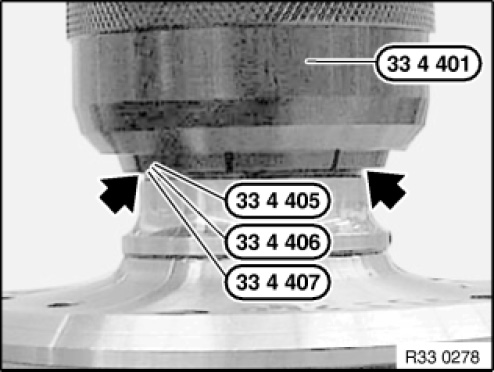
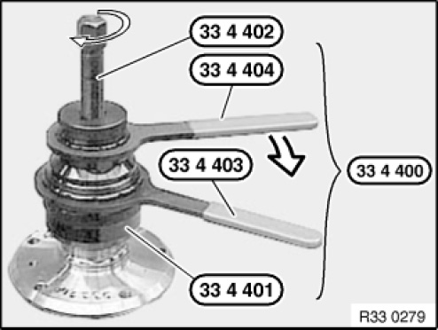

33 41 ... Detaching Inner Wheel Bearing Race From Drive Flange
33 41 ... Detaching wheel bearing inner race from drive flange (drive flange removed)
Special tools required:

NOTE: Detach wheel bearing ring with special tool 33 4 400 through groove in wheel bearing inner ring.

Position special tool 33 1 307 on drive flange.
Select one of the following special tools using the wheel bearing inner ring and insert into special tool 33 4 401.
33 4 405 for dia. 45 - 51 mm
33 4 406 for dia 50 - 55 mm
33 4 407 for dia. 55 - 61 mm
Screw out special tool 33 4 402 until the tapered attachment of the spindle comes into contact with the special tool33 4 401.
Position special tool 33 4 401 with the corresponding insert on groove of wheel bearing inner ring.

Compress special tool 33 4 401 with wrenches 33 4 403 and 33 4 404 until the special tool can still be turned in the groove.
Detach wheel bearing inner ring by turning special tool 33 4 402.